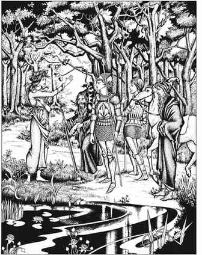

陆地冒险 · Land Adventures

角色从起点出发，会经过不同地形，也会穿越类人／半人类人口密度不同的区域。地形会影响遇到怪物的频率和种类，人口密度同样决定遭遇的概率与种类。因此，DM 应在大比例地图上标示人口密度，或至少事先心中有数。遭遇概率的基础值如下：
遭遇概率 Chance of Encounter
| 人口密度 | 基础遭遇概率 |
|---|---|
| 相对稠密 | 1/20 |
| 中等至稀疏／巡逻区域 | 1/12 |
| 无人居住／荒野 | 1/10 |
按地形进行遭遇时段检定 Frequency of Encounter Chance Time Checks
| 地形 | 清晨 | 正午 | 傍晚 | 夜间 | 午夜 | 黎明前 |
|---|---|---|---|---|---|---|
| 平原 | × | × | ||||
| 灌木地 | × | × | × | × | ||
| 森林 | × | × | × | × | × | × |
| 沙漠 | × | × | × | |||
| 丘陵 | × | × | ||||
| 山地 | × | × | ||||
| 沼泽 | × | × | × | × | × | × |
“×”表示检定遭遇；“—”表示只有队伍人数超过 100 个生物时才检定。
日间时段包括清晨、正午与傍晚，分别约为队伍出发一小时后、旅途正中以及接近扎营时。夜间时段包括入夜、午夜与黎明前，分别对应睡眠开始、中段与结束。若某地形只有一两个遭遇检定时段，可以自行变动检定时间，以免玩家依赖他们不应掌握的信息。需要进行遭遇检定时，掷适当骰子；若结果为 1，即发生遭遇。然后查对应地形的表格，随机确定遭遇怪物。若 DM 已详细记录某区域的怪物分布，则通常无需随机确定，因为相关信息本应已有记录。
若确实发生遭遇，查表格附带的说明并遵循特别程序。遭遇方尝试躲避的规则见“战斗”中的“追击与躲避追击”。
本节内容